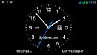
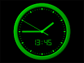
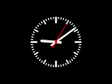

THE
ANALOG
SPECIALISTS
- Home
- For sale
- Repairs
- About
- Contact



Analog watch (American) or analogue watch (UK & Commonwealth) is an example of a retronym.
It was coined to distinguish between the analog watches from newer type digital watches.